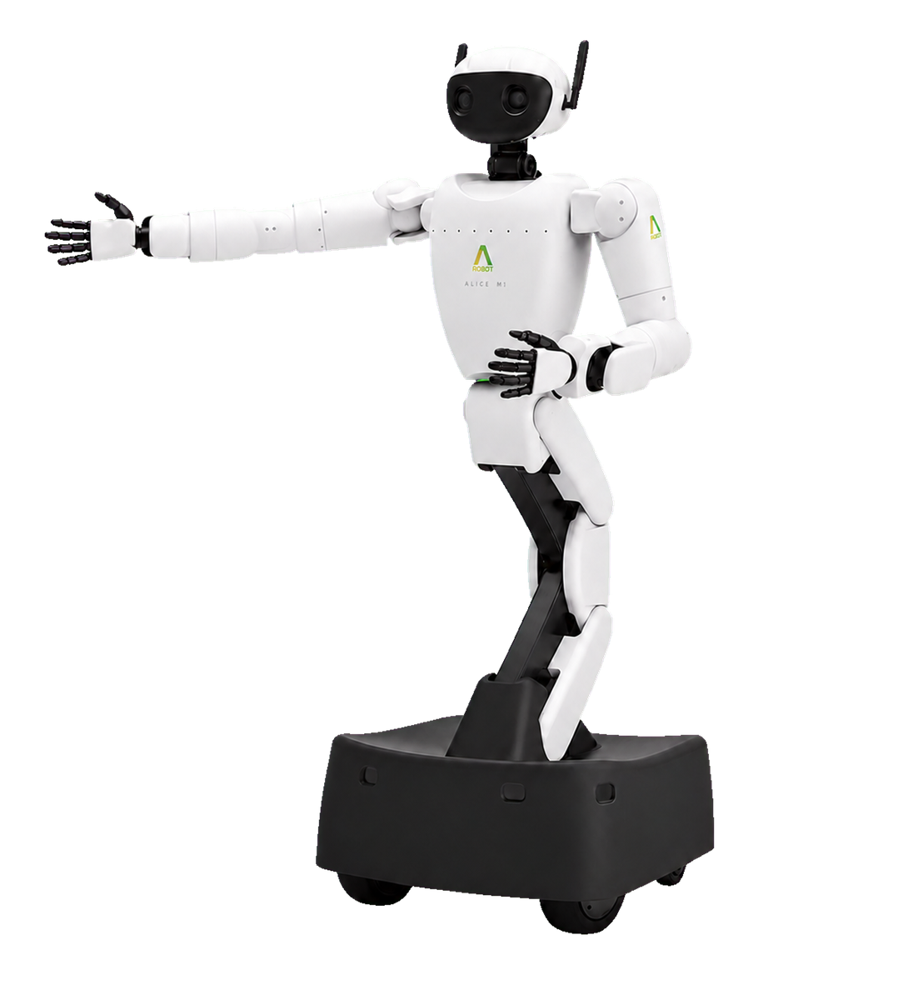

조작 — 주행 · 모터 제어

- 01모터 제어위치 · 속도 · 토크
- 02오차 제어PID
- 03이동 제어차동 구동
- 04팔 제어정기구학 · 역기구학
정기구학


관절 각도가 변하면 손끝 위치도 차례로 달라진다.
역기구학
작업공간
앞쪽 · 안쪽

앞과 옆의 도달 범위가 모여 입체 작업공간이 된다.
관절 각도가 변하면 손끝 위치도 차례로 달라진다.

앞과 옆의 도달 범위가 모여 입체 작업공간이 된다.